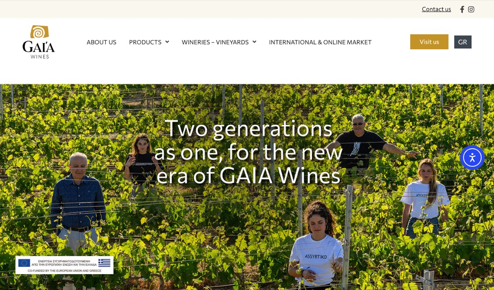

← Back to holdings
Winery
Gaia Wines
Greek indigenous varieties, since 1994.

The company
Gaia Wines was founded in 1994 by oenologist Yiannis Paraskevopoulos and agronomist Leon Karatsalos, with the aim of bringing Greek indigenous grape varieties to the world.
It operates two wineries — on Santorini, home of Assyrtiko, and in Koutsi, Nemea, land of Agiorgitiko. Wines such as Thalassitis and Gaia Estate are exported to more than 25 countries.